Always around real operations
Learned technology by being close to production work, customer needs, equipment changes, office problems, and the daily reality of a business that had to keep moving.
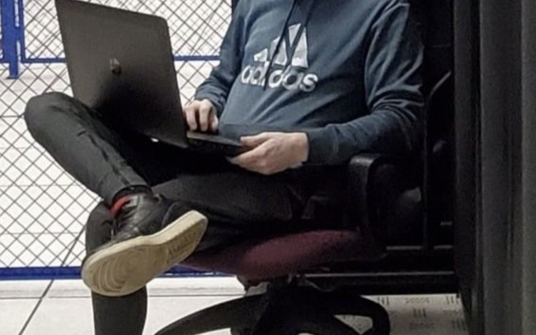
Kanawha County, WV homeowner
Hands-on Technology Operations Professional
Infrastructure, networks, endpoints, field installs, homelab, and business systems. Current Keith's Kitchens technology support; seeking the right full-time hands-on technology role outside Keith's Kitchens.
Profile
I started in a family-business environment where technology was part of keeping real work moving. I was around the shop, the office, the equipment, the problems, and the pressure to make things better. That turned into school network projects, Field Nation dispatch work, POS installs, NOC support, TCS client work, datacenter work, and current Keith's Kitchens technology operations. Each step added a layer: hard-knocks troubleshooting, better notes, cleaner installs, stronger systems thinking, higher quality standards, and more ownership of the outcome. I do my best work as a hands-on technical owner, not as a people manager.
Growth Path
Learned technology by being close to production work, customer needs, equipment changes, office problems, and the daily reality of a business that had to keep moving.
Turned curiosity into visible work through network projects, Project Generals digital/media responsibilities, music production, and public presentation.
Built practical habits through Field Nation, Thomas Hospital infrastructure upgrades, POS rollouts, cabling, workstation refreshes, and customer-site closeout proof.
Datacenter work showed what high-quality facilities and process look like at scale; Keith's Kitchens and startup-style work turned that into broader hands-on ownership.
Proof
Independent contractor
Worked as an independent contractor before PAFDS Technologies. The public proof keeps the rating summary and redacts individual work-order details.
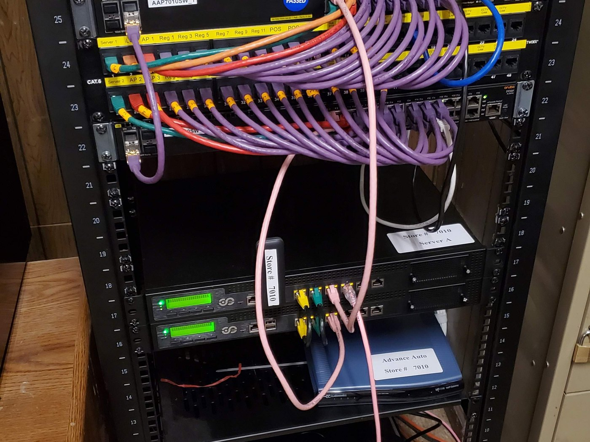
Network install
Handled rack buildout, patching, switches, firewalls, cable cleanup, and onsite validation.
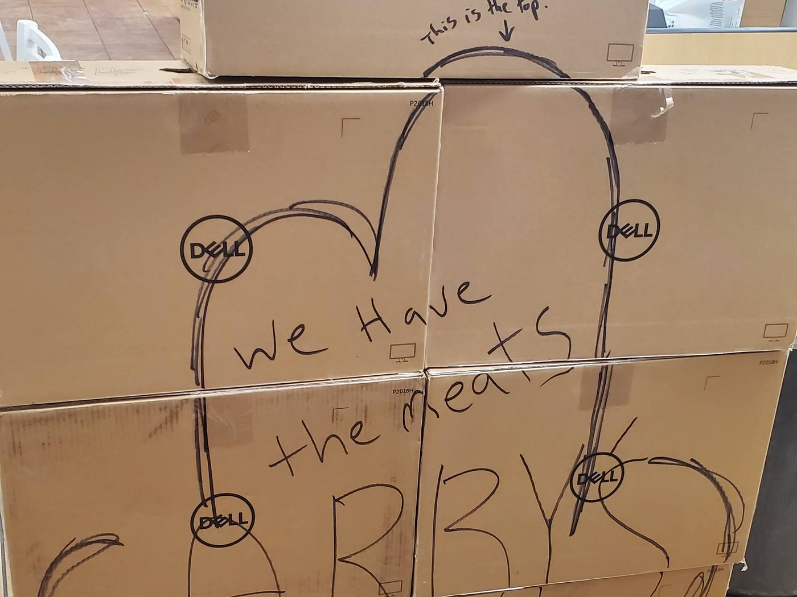
POS rollout
Dell POS equipment staged for an Arby's rollout, showing the practical field work behind retail hardware deployments, cutovers, and onsite install coordination.
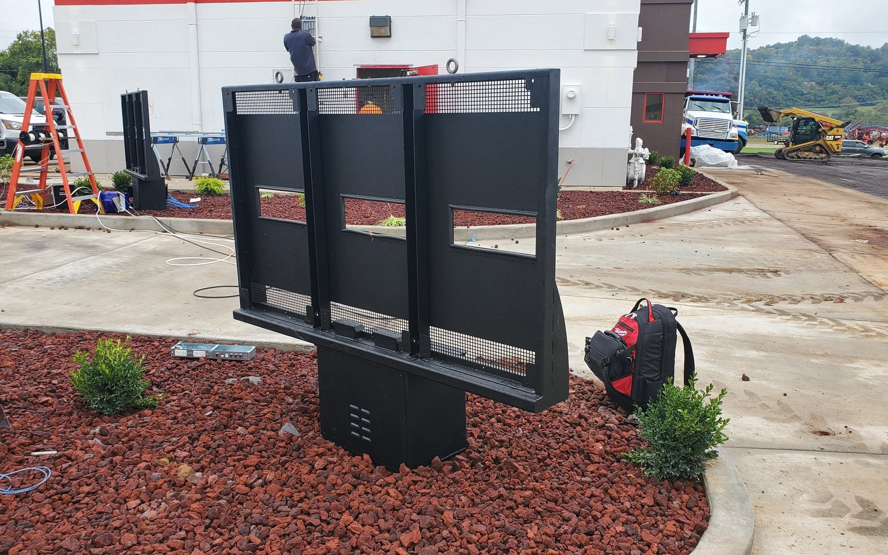
Field work
Worked in live site conditions where power, weather, access, customers, and cutover timing all mattered.
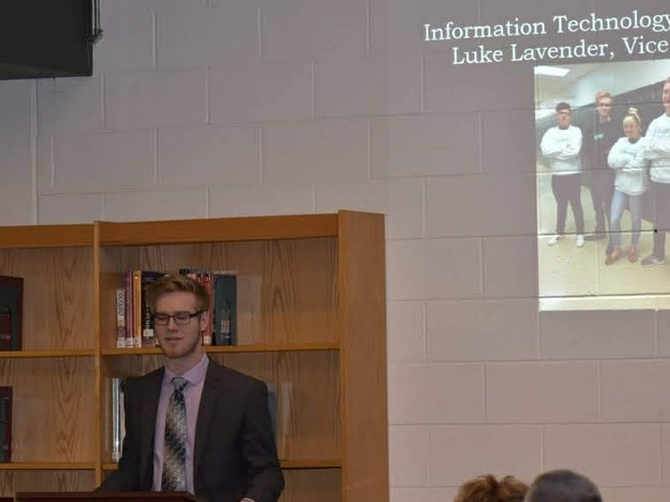
Winfield High School
Handled digital work for a class company that sold apparel and produced morning-announcement commercials, including student-made music under the PAFDS DA PUMPKN name. Also produced Run and Hide for CavRaps / Caleb Cavender while in high school.
Project Generals media
Project Generals music video made by Matthew Wright, with audio produced by Luke Lavender for the shirt campaign.
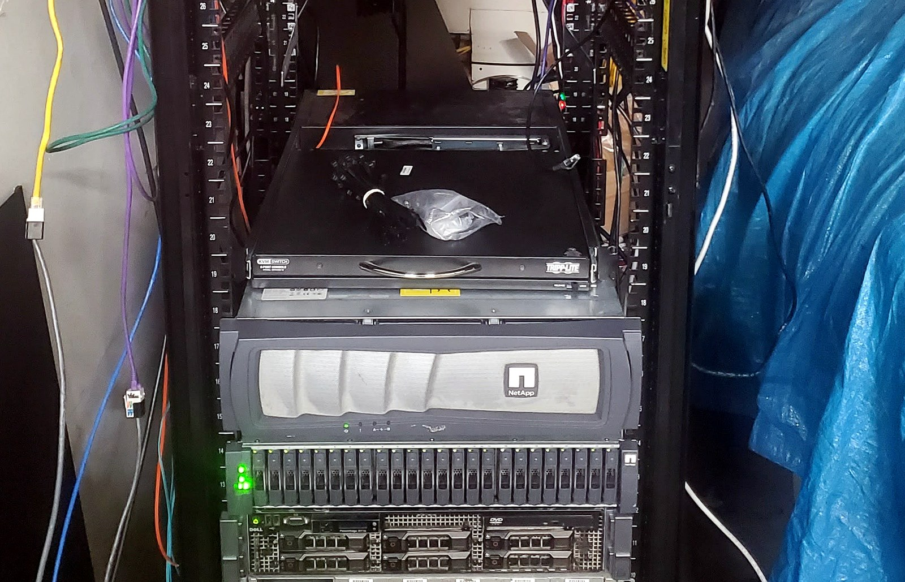
Home lab
Built and worked from a real rack with enterprise storage, Dell servers, switching, patching, and KVM access for hands-on systems practice.
Home Lab
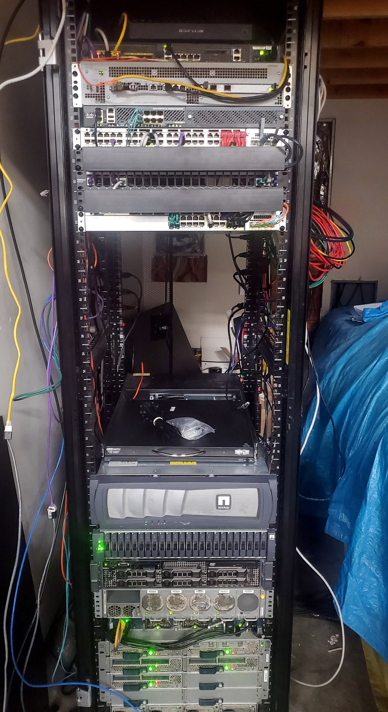
This rack was not decoration. It was where I learned enterprise habits by touching real equipment: storage, switching, server hardware, remote access, cable layout, power, noise, heat, and the boring maintenance details that make infrastructure dependable.
NetApp storage system, Dell PowerEdge rack servers, Cisco switching, patch panels, SFP/fiber and copper uplinks, rack KVM console, cable management, and mixed server/network gear.
Virtualization hosts, Linux and Windows server builds, VLANs, routing, firewall rules, DNS/DHCP, storage layout, SMB/NFS/iSCSI concepts, backups, restores, monitoring, and remote administration.
Private lab workloads for web/app experiments, file services, internal tools, test services, documentation workflows, and proof-of-concept environments before using those ideas in live work.
It gave me repetition with the same kinds of constraints that show up in business environments: storage decisions, network segmentation, service uptime, physical access, hardware failure, and clean handoffs.
Experience
Support the technology side of a real production business, including shop systems, office workflows, SMKK, Doors2Go, user support, equipment change, and practical reporting.
Worked in high-quality datacenter facilities on rack/stack, cabling, labeling, hardware checks, break/fix, RMAs, ticket updates, ETAs, and handoffs.
Supported Veeva CRM and application issues in a TCS-supported Eli Lilly environment with clear ticket notes, user validation, and compliance-sensitive documentation.
Supported Windows Server and infrastructure tied to electric-utility operations in a TCS-supported AEP environment, including patching, SSL renewals, physical and virtual systems, and PowerShell checks.
Managed Meraki networks, 3CX phone administration, Microsoft 365 tenant/domain support, Barracuda appliances, vendor coordination, and alert response.
Completed POS and network installs for Arby's and retail sites, including racks, switches, firewalls, wiring, POS equipment, cable management, and cutover support.
Completed customer-rated Field Nation dispatch work and participated in Thomas Hospital IT infrastructure upgrades before PAFDS Technologies.
Started around Keith's Kitchens operations, learning how technology, production equipment, office workflows, customer needs, and business pressure connect.
Case Study
SMKK is a private Keith's Kitchens workflow platform I helped build and support. It connects the work that happens in the office, shop, and field: leads, quotes, orders, receiving, shop/CNC coordination, scheduling, installs, closeout, documents, and reporting.
Lead capture, no-order tracking, quote flow, active jobs, ordering, receiving, shop/CNC coordination, scheduling, install, closeout, DocumentAI, and reporting.
ASP.NET Core, C#, Razor Pages, MongoDB-backed workflows, Azure Blob storage, Microsoft Identity, Microsoft 365 paths, deployment scripts, TLS, and health reports.
Make work visible, keep users in their task flow, reduce lost details, improve reporting, and turn blockers into tracked follow-up instead of loose conversation.
Hands-on troubleshooting, proof-backed changes, user-readable notes, no fake action claims, careful privacy boundaries, and practical rollout discipline.
Evidence Gallery
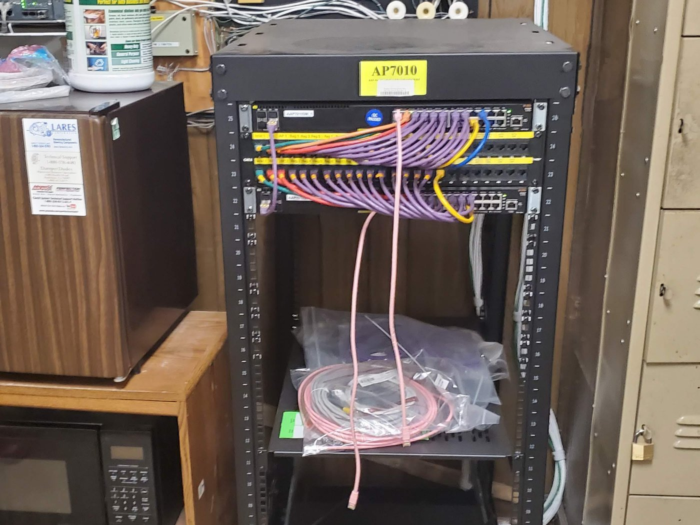
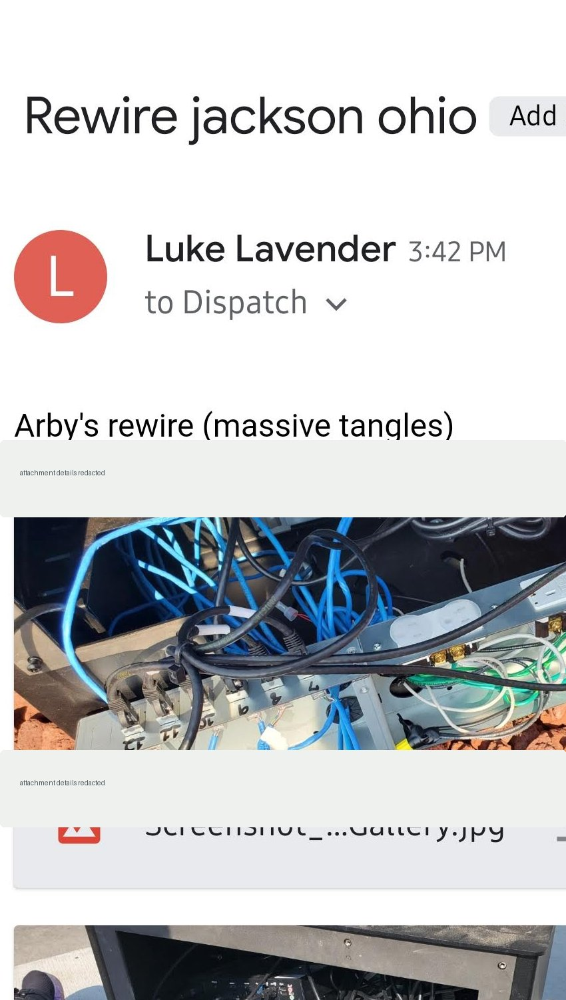
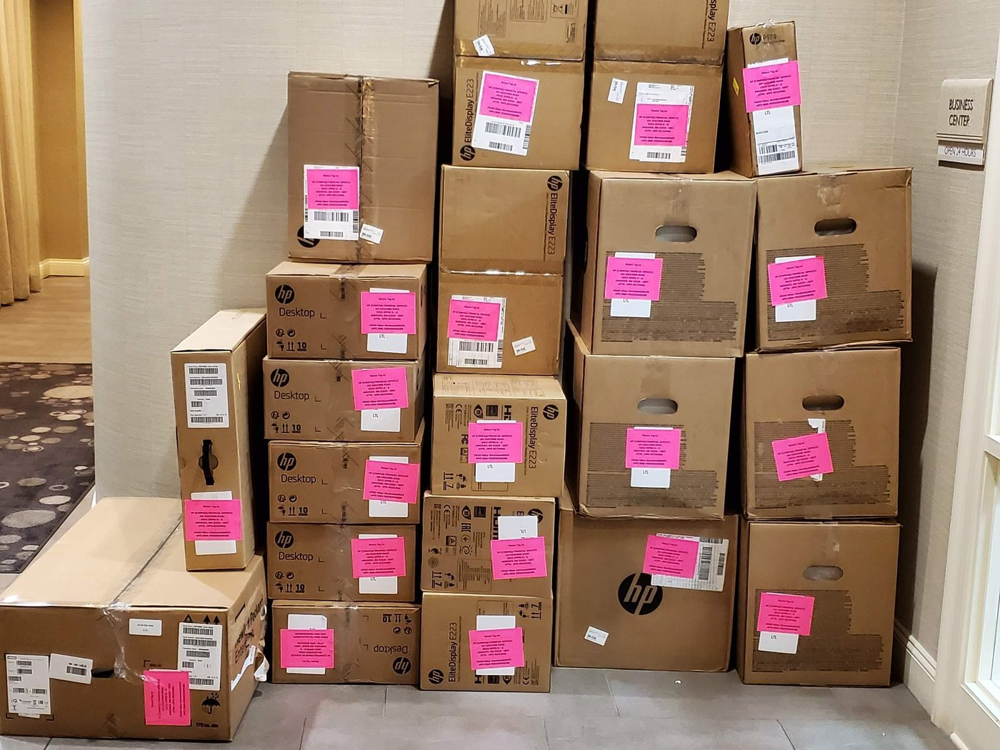
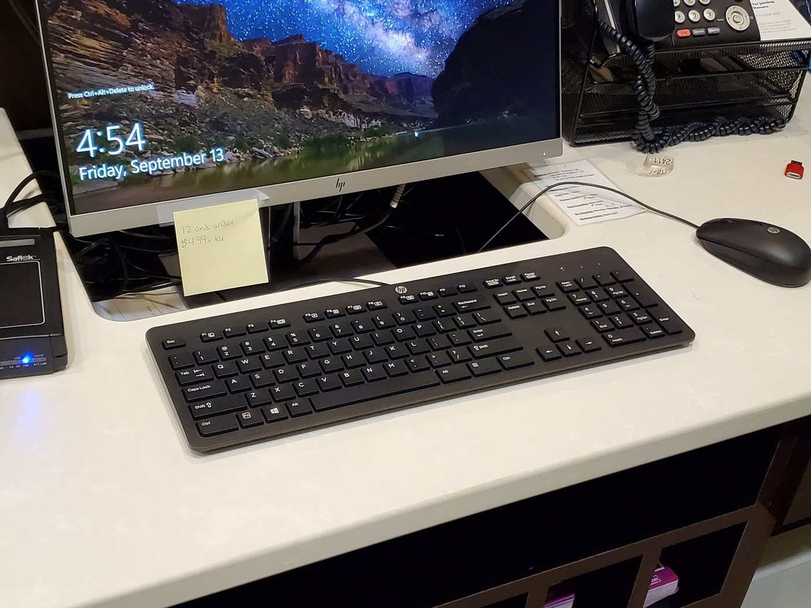
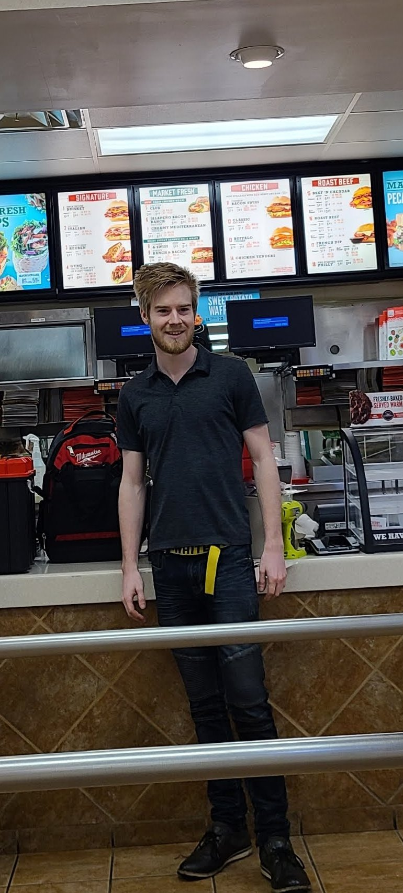
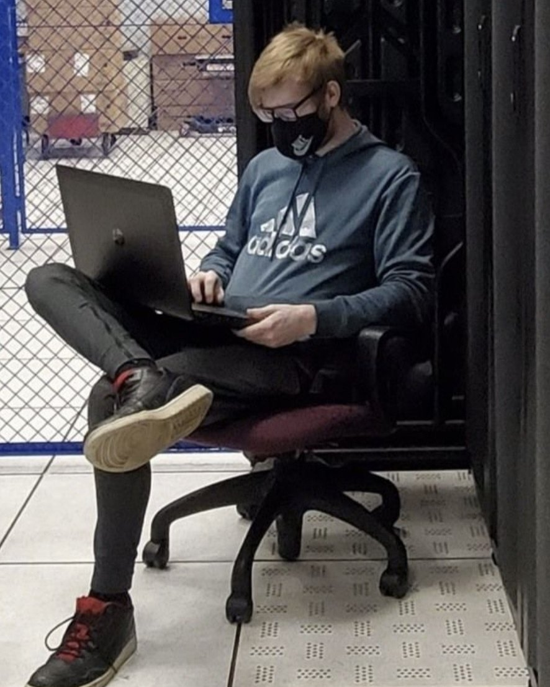
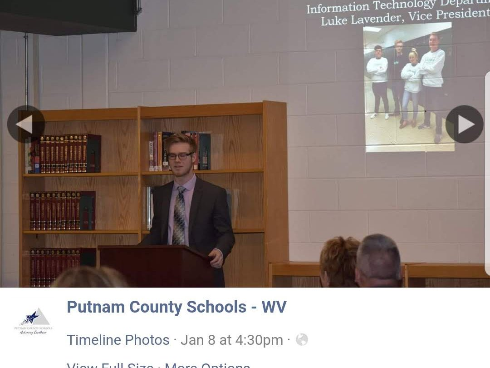
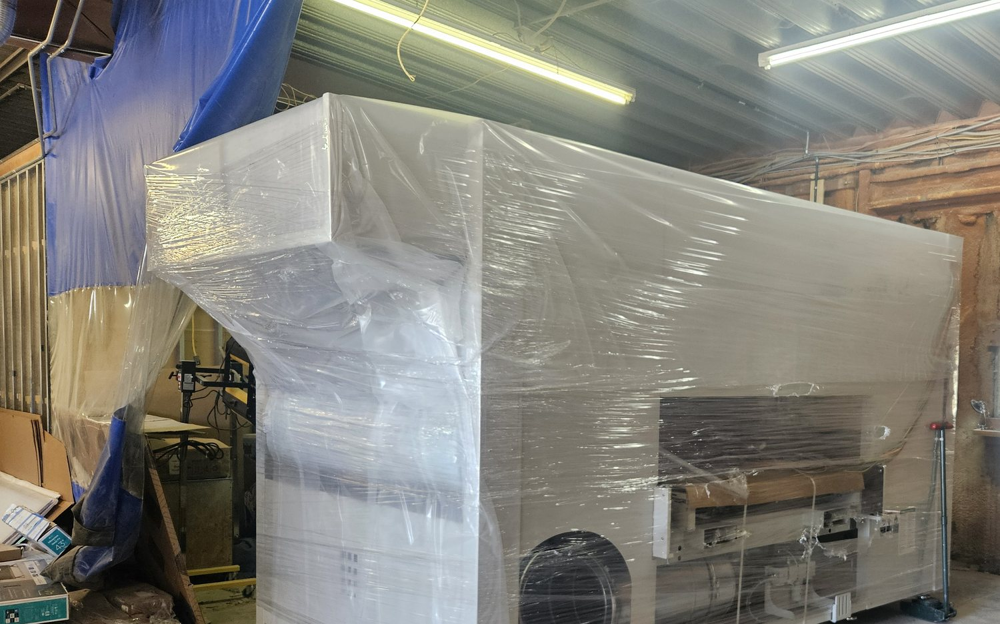
Project Highlights
Worked on WAP installs in a controlled site environment.
Helped with a COVID-vaccine workstation refresh at a refrigeration plant.
Handled light IT work and practical conference-room support, including table cable-routing work.
Built school-age network and Wi-Fi antenna projects before formal networking coursework.
Used enterprise rack hardware at home for virtualization, storage, network segmentation, backups, monitoring, and hosted lab workloads.
Completed independent onsite IT dispatch work before PAFDS Technologies, backed by customer ratings.
Helped on healthcare-site IT infrastructure upgrade projects as an independent contractor before PAFDS Technologies.
Worked through Tata Consultancy Services on AEP and Eli Lilly engagements, and promoted TCS culture internally with a Red Bull Racing / Max Verstappen profile-image nod during the AEP work.
Worked through real shop-floor change as CNC, sanding, paint, and prime equipment changed the environment around the technology work.
Helped grow Doors2Go from a Keith's Kitchens shop resource into a business channel by connecting shop knowledge, customer needs, documentation, and practical digital workflows.
Core Skills
Cisco IOS fundamentals, VLAN/L2/L3 troubleshooting, Meraki, Cisco VWLC, Nexus/ASA exposure, VPN, DNS, DHCP, SNMP, Palo Alto, and Cisco ACI collaboration.
Teams, Outlook, Exchange workflows, OneDrive, SharePoint, Entra awareness, calendar/email paths, and user-focused documentation.
Intune packaging patterns, Windows policy, managed shortcuts, Office deployment support, endpoint telemetry, PowerShell validation, and detection scripts.
Windows Server, Active Directory, GPO, IIS/TLS, SQL Server support, MongoDB-backed apps, ASP.NET Core/Razor Pages, Azure Blob storage, ServiceNow, SCCM, N-able scripting, virtualization practice, and NetApp storage lab work.
Education and Training
Diploma, 2018. Business Management focus. Technology Director for Project Generals, a class company that sold T-shirts, long sleeves, sweatpants, and hoodies; helped plan and produce morning-announcement commercials with student-made music as PAFDS DA PUMPKN, including Gang Green and Diss Gang Green tied to the shirt campaign. The #GANGGREEN music video was made by Matthew Wright with audio produced by Luke Lavender. WHS Show Choir with guitar.
Freshman year. Early school technology curiosity became a lasting respect for authorization boundaries, responsible security work, and careful documentation.
Junior and senior year vocational Cisco Networking focus.
CBT Nuggets, INE, homelab practice, Cisco coursework, Microsoft server history, and ongoing infrastructure study.
Links